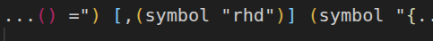
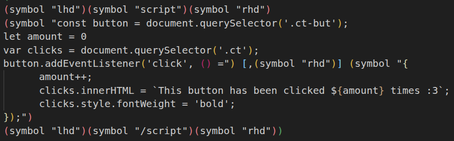

July 29, 2026
Click me!
Button hasn't been clicked :(
I wanted to see if it was possible to render javascript code without having to use external files. I say without external files, because skribilo provides the functionality to link files through
<script src='script.js'></script>,
however, that was not good enough for me.
I want to note that while yes, this can be done for entire complicated scripts, that'd be truly insane. Just write the js file and link it like above. This is why I only stuck to a simple clicker for demo purposes.
The biggest problem in getting this to work was definitely getting the opening and closing tags to work (< and >, respectively). This is because these are reserved characters in HTML, which means that these are safely rendered* when the HTML is compiled.
Though this is visible as the correct symbols when the page is rendered, this is bad if I'm trying to add a <script> , or => to my page. HTML won't accept <script> as valid.
In order to render a script, I need to find a way to overwrite the safe render for the tags. I couldn't symply used (display "<script>"), as yes, it renders the text correctly, but it, however, places it at the beginning of the file, which is does not work.
In looking through Skribilo's documentation , I realized there's a section on symbols, and special characters. Surely < and > are there, as they are very common symbols in math, and this framework is used to write papers (which can contain lots of formulas).
Bingo! A specific symbol (lhd) exists, specifically to render <. Likewise, rhd exists to render >. The reference to those (and symbols in general) can found here. I tried it, and not only do the tags render correctly, they render in the correct place within the file, meaning I was able to do this:
(symbol "lhd")(symbol "script")(symbol "rhd")
After doing this initial <script> rendering, I realized I could put any string inside a symbol tag and it'd render as the string literal, in the correct place (ie not at the very top), so I of course put all the inner javascript code in a "single" symbol tag.
This somewhat worked, but I'd run into the same problem when attempting to render =>, as it contained > in it. I thought it'd be a pain to fix, but not really. I simply had split the symbol tag "into two". It looked something like this:

Yes, I had to attach an image to show the code snippet, otherwise it won't compile, as it's a snippet of the js code.
The full code snippet would look like this:

Note: I had to use querySelector becuase I couldn't add an id (or rather :ident) to the button, or bottom text.